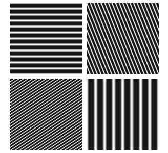
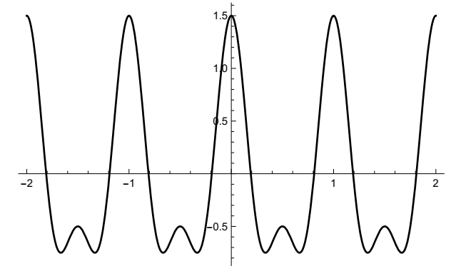
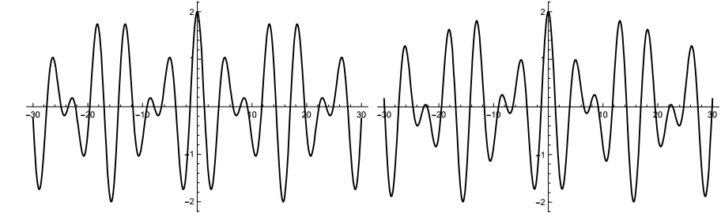

周期现象
从傅里叶级数开始本课程就是从周期函数开始，这些函数表现出有规律的重复模式。没有必要把周期性作为一种重要的物理（和数学）现象来强调——你很可能在几乎每门课上都看到了周期性行为的例子和应用。我只想提醒你，周期性通常表现为两种形式，有时相关，有时不相关。一般来说，我们认为周期现象是根据它们在时间上是周期性的还是在空间上周期性的来考虑的。
时间和空间
在时间周期性的情况下，这种现象就会出现。例如，你站在海面上的某个固定点（或交流电路的某个固定点），波浪（或电流）以规律的、重复出现的波峰和波谷模式冲击着你。波浪的高度是时间的周期函数。另一个例子是声音。声音以纵压波的形式到达你的耳朵，这是一种周期性的空气压缩和稀疏。
就空间周期性而言，你会遇到这样的现象：比如，你拍了一张照片，然后观察到重复的图案。
时间和空间周期性在波动中最自然地结合在一起。以一维空间为例，考虑沿弦传播的单个正弦波。对于该波，时间周期由频率v测量，维度为1/时间，单位为Hz（赫兹=周期/秒），空间周期由波长\(\lambda\)测量，维度为长度，单位为特定设置方便的数值。如果我们在空间中固定一个点，让时间变化（拍摄该点的波动视频），那么连续的波峰以每秒ν次的速度经过该点，连续的波谷也是如此。如果我们固定时间并检查波在空间中的传播方式（拍摄快照而不是视频），我们会看到连续波峰之间的距离是一个常数λ，连续波谷之间的距离也是如此。
频率和波长通过方程v=λν相关，其中v是传播速度。这个基本方程只不过是另一个基本方程的波动版本：速度=距离/时间。如果速度是固定的，就像真空中电磁波的速度一样，那么频率决定了波长，反之亦然；如果你能测量一个，你就能找到另一个。对于声音，我们将频率的物理属性与音调的感知属性联系起来。对于可见光，频率被感知为颜色。频率越高，波长越短；频率越低，波长越长。通过这个简单的观察，我们已经触及了一个对我们而言将持续且统一的主题：定义量之间的相互关系。
更多关于空间周期性的内容。空间周期性出现的另一种方式是，当某个空间区域存在重复模式或某种对称性时，与该区域相关的物理可观测量也具有反映这种重复模式的重复模式。例如，晶体在空间中具有规则的、重复的原子图案；原子的排列称为晶格。描述晶体电子密度分布的函数是描述晶体的三维空间变量的周期函数。我提到这个例子，我们稍后会再讨论，因为与你可能想到的通常的一维例子不同，这里的函数有三个独立的周期，分别对应于描述晶格的三个方向。
这是另一个例子，这次是二维的，这很适合傅里叶分析。请考虑以下这些明暗条纹：

毫无疑问，在相应的图像中存在某种空间周期性行为。即使没有精确的定义，也可以合理地说，有些图案的频率较低，而另一些图案的频率较高，这意味着有些图案单位长度上的条纹比其他图案少。对于二维及更高维度的周期性，还有一个更微妙之处：“空间频率”，无论我们最终如何定义它，都必须是一个矢量，而不是一个数字。我们必须说，条纹在特定的方向上以特定的间距出现。
这种周期性条纹及其生成函数是一般二维图像的构建块。当没有颜色时，图像是一个由不同灰度组成的二维阵列，这可以通过这种交替条纹的合成——傅里叶合成来实现。以这种方式构建图像存在有趣的感知问题，颜色更为复杂。
定义、示例
为确定我们都知道我们在说什么，一个函数\(f(t)\)，\(-\infty\lt t\lt \infty\)，是周期为T的周期函数，如果有一个数\(t\gt 0\)，使得 \[f(t+T)= f(t)\] 对所有t。如果存在这样一个T，那么使得等式成立的最小的T，称为函数\(f(t)\)的基本周期。基本周期的每个整数倍也是一个周期： \[f(t+nT) = f(t), \quad\quad n=0,\pm 1,\pm 2,\dots\]
我在这里称变量t是因为我必须称之为某种东西，但这个定义是通用的，并不意味着意味着时间的周期性。
f（t）在任何长度为t的区间上的图是一个周期(cycle)，也称为一个周期(period)。从几何上讲，周期性条件意味着一个周期（任何周期）的形状决定了图的所有位置：形状一遍又一遍地重复。一个问题要求你将这个想法转化为一个公式（对函数进行周期化）。如果你知道一个时期的函数，你就知道一切。
这对每个人来说都是旧闻，但是，举个例子，我还想说几点。考虑函数
\[f(t) = cos\ 2\pi t + \frac{1}{2}\ cos\ 4\pi t,\]
其图如下所示。

独立项的周期分别为1和1/2，但两项和的周期为1： \begin{align} f(t+1) &= cos\ 2\pi(t+1) + \frac{1}{2}cos\ 4\pi(t+1)\\ &= cos(2\pi t + 2\pi) + \frac{1}{2}cos(4\pi t + 4\pi) = cos\ 2\pi t + \frac{1}{2}cos\ 4\pi t = f(t). \end{align}
对于全部t，没有更小的T值，使得 \(f(t+T)=f(t)\)。整体模式每秒重复，但如果该方程表示某类波，可以说它的频率为1Hz吗？我不这么认为。它有周期1，但你最可能说它有，或包含，两个频率，一个余弦频率1Hz和一个频率2Hz。
将周期函数相加的问题值得一提：
- 两个周期函数的和是周期性的吗？
答案为否，这是因为无理数。例如，\(cos\ t\)和 \(cos(\sqrt{2}t)\)各为周期性的，周期分别为\(2\pi\)和\(2\pi\sqrt{2}\)。但和\(cos\ t + cos(\sqrt{2}t)\)不是周期性的。
下面是\(f_1(t) = cos\ t + cos\ 1.4 t\)（左，周期性）和 \(f_2(t) = cos\ t + cos(\sqrt{2}t)\)（右，非周期性）的图示。它们不相等。仔细看看。

\(f_1(t)\)的周期是多少？其中一个问题会让你找到它。
我意识到，当计算机需要用有理数近似值来绘制图形时，用有理数来绘制计算机图形是一种讽刺。我是用Mathematica绘制这些函数，但我不知道它使用什么作为\(\sqrt{2}\)的近似值。这个例子有多人为？一点也不人为。我们下文会解释原因。
构建块：更多示例
时间周期性的经典例子是谐振子，无论是弹簧上的质量块（无摩擦），还是LC电路中的电流（无电阻）。谐振子在几乎每一节物理课上都有详尽的介绍。之所以如此，是因为它是唯一一个可以详尽处理的问题。嗯，也不完全正确——正如有人向我指出的那样，二体问题也已经被彻底研究过了。
系统的状态由一个正弦曲线描述，例如 \[A\ sin(2\pi v t + \phi).\]
该表达式中的参数是振幅A，频率v，和相位\(\phi\)。该函数的周期为1/v，因为 \begin{align} A\ sin(2\pi v(t + \frac{1}{v}) + \phi) &= A\ sin(2\pi v t + 2\pi v\frac{1}{v} + \phi)\\ &= A\ sin(2\pi vt + 2\pi + \phi) = A\ sin(2\pi vt + \phi) \end{align}
空间周期性的经典例子，即整个主题的开始，是圆环中的热量分布。一个环以某种方式被加热，然后热量以某种方式在材料中分布。从长远来看，我们希望环上的所有点都具有相同的温度，但短期内不会如此。在每个固定时间，环周围的温度是如何变化的？
在这个问题中，周期性来自环的坐标描述。把该环想象成一个圆。环上的一个点由角度θ决定，而与位置相关的量都是θ的函数。由于 \(theta\)和\(\theta + 2\pi\)是圆上同一个点，描述圆上物理量（如，温度）的任何连续函数，都是\(\theta\)的周期函数，周期为\(2\pi\)。
该温度分布不是由简单正弦给定。它是傅里叶的热门想法，考虑一个正弦和作为温度分布的模型： \[\sum_{n=1}^N A_n sin(n\theta + \phi_n).\]
对时间的依赖性在系数\(A_n\)中。我们稍后将更全面地研究这个问题。
无论物理背景如何，三角和中的各个项（例如上面的项）都称为谐波，该术语来自音乐音高的数学表示。这些项以不同的振幅和相位对总和做出贡献，这些值可以是任何值。另一方面，这些项的频率是基频的整数倍。对于上面的总和，它是\(1/2\pi\)。因为频率是基频的整数倍，所以总和也是周期为2π的周期。项\(A_n sin(n\theta + \phi_n)\)周期为\(2\pi/n\)，但总和不能有一个比出现的最长周期更短的周期，即\(2\pi\)。
音高和调音。音高和音符的产生是一种与我们一直在考虑的一般类型相同的周期性现象。音符可以通过振动琴弦或其他有规律振动的物体（如嘴唇、簧片或木琴的琴弦）产生。工程问题是如何调音乐器。调音的主题有着引人入胜的历史，从希腊人基于整数比率的自然调音，到如今使用的等温音阶理论。该系统基于\(2^{1/12}\)，一个无理数。
等温音阶有 12 个音符，从任何给定的音符到高八度的同一个音符，两个相邻的音符的频率比为\(2^{1/12}\)。音阶中的音符频率为\(cos(2\pi\cdot 440\cdot 2^{n/12}t)\)，n = 0 到 n = 12。若一个频率为440 Hz的A音（音乐会A音），其音高为 \[A = cos(2\pi \cdot 440\ t),\]
那么在等温音阶中，从A高6个音符的\(D\sharp\)表示为：
\[D\sharp = cos(2\pi \cdot 440\sqrt{2}t).\]
同时播放A和\(D\sharp\)基本上给出了我们之前的信号，\(cos\ t + cos\ 2^{1/2}t\)。我不会评判它听起来好不好听——它是三全音，增四度，“音乐中的魔鬼”。
当然，当你给钢琴调音时，你不会非理性地收紧琴弦。艺术在于做出正确的近似。对此有很多讨论；例如，请参见 http://www.precisionstrobe.com/
要了解有关一般调音的更多信息，请尝试 http://www.wikipedia.org/wiki/Musicaltuning
下面是第一份参考文献中的一段话，描述了对音调良好的需求：
音乐技术的两项发展必然导致纯律的改变。随着带弦乐器的发展，在设置纯律音品时出现了一个问题：在琴颈上的两根弦上演奏八度音阶会产生不纯的八度音阶。同样，设置为纯律音阶的管风琴也会发出一些不悦耳的和弦。为了解决这个问题，一种妥协的方案是平均律音阶的出现。在这个系统中，一些音程进行了调整，以增加可用的调数。随着18世纪作曲技巧的演变，和声转调的应用日益增多，人们提倡使用平均律音阶。J. S. 巴赫就是其中一位倡导者，他出版了两部名为《平均律钢琴曲集》的完整作品。这两部作品分别包含24首赋格曲，分别用12个大调和12个小调创作，并证明了使用平均律音阶可以将音乐谱写成任何调，并转换到任何调上。